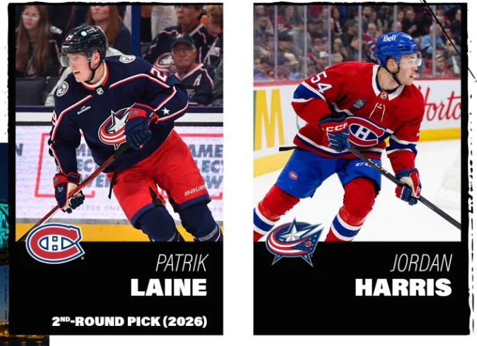

Patrik Laine est un joueur de hockey professionnel finlandais de 26 ans. Il est la plus recente acquisition du canadien de montreal et celle qui fait le plus reagir. En effet apres son echange contre Jordan Harris lors de la saison morte de 2024, le finlandais recoit des le departs un chaleureux acceuil dans sa nouvelle ville. Avant d'aller plus loin, faisons un bref retour dans le passer afin d'en apprendre d'avantage sur ce joueurs qui fait tourner les tetes. Patrik Laine fut le 2ieme choix au repechage en 2016 apres Austin Matthews. Il obtient cet accomplissement apres avoir eu une saison de championnat dans les rangs de la ligue Liiga en finlande. Cette ligue est la ligue professionnel de finlande, donc pour un joueur de 18 ans de jouer et evoluer dans cette ligue avec succes est un explois en sois. Par contre, le parcours de Laine ne fut des plus joyeux. Apres avoir ete repeche par Winnipeg, Laine devient rapidement une jeune sensation de la ligue national des son arriver, mais ce n'est pas toujours facile pour le jeune finlandais. Lors d'une partie contre Boston, le numero 29 se fait prendre par surprise avec une solide mise en echec qui le mettra hors du jeux pour une duree d'environ 1 mois, mais cela est seulement le commencement. Rapidement la sante mental du jeune de 18 ans est mise a l'epreuve et malheureusement prend quelque peu le dessus sur lui dans le combat, ces performances sont de moins en moins bonnes, les critiques sont plus dure et l'ambiance autour de lui dans le vestiaire ne fonctionne plus. C'est pourquoi, 2021 les jets prennent donc la decision d'echanger Laine en esperant lui donner un coup de pouce afin de relancer ca carriere du bon pied. Arrive a columbus, Laine fait bien ca place commence avec quelque bonne partie produit d'une bonne maniere et cela dure pour 1 saison a 1 saison et demi, Puisqu'en janvier 2024, Laine prend la decision d'entre au programme d'aide des joueurs avec des problemes de depression ainsi que des problemes de jeu. Cela deviendrais donc son plus gros obstacle dans sa carriere, autant pour lui, ca famille et ses coequipier et il restera sous le programme pour le reste de l'annee. En effet, lorsqu'il en est sorti, les dirigeants de colombus ont conclu avec Patrik qu'il serait peut etre bon pour lui de faire un changement de decors et c'est a ce moment que la nouvelle tombe, "Laine echanger a Montreal". Tout les partisants ont eu une lueurs d'espoires en apprenant la nouvelle.
Venu le moment de la pre-saison les partisants ont eu de grosse attente envers le finlandais, jusqu'a un match contre Toronto qui est venu gacher l'espoir de plusieurs partisants du Canadien, lorsque Cedric Pare entre en contact genoux a genoux avec Patrik Laine. Apres le contact Laine restera etendu sur la patinoire pour une longue periode de temps et en ce relevant ne met aucun poids sur ca jambes. Resultat un autre 3 mois d'innactivite pour Laine. Lors de son premier match retour au centre bell, les partisants ont eu beaucoup d'anticipation et d'exitation face a ce match et le finlandais ne decois pas en marquant son premier fillet de la saison et son premier dans l'uniforme du bleu blanc rouge. Tellement que la foulle lui ont offers une ovation longue pour lui montrer leur support et leurs encouragements. En terminant, voici une petite video de moment fort de Patrik Laine depuis le debut de ca jeune carriere!